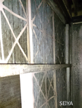
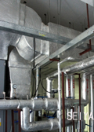
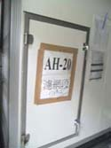
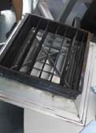
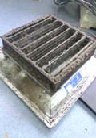
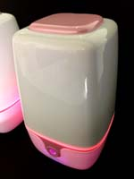

空調清淨除菌系統
傳統空調系統是並沒有消毒及淨化裝置,頂多只有初級濾網,中央空調風管送風系統在送風機前頂多只有中級濾網. 因此室內要有良好的空氣,並降低感染,以及降低室內有機氣体,如 甲醛.
一個完整的空氣調節系統包含了冷暖氣. 除濕. 過濾粉塵(初級濾網), 稱HVAC, 它的污染程度. 使用年數與室內空間粉塵濃度成正比, 是維護IAQ之重要環節.空調系統之污染除了造成不健康與工作效率差外, 亦會造成能源耗損且引響運轉效能.日本JADCA(日本風管清潔協會)做為施做標準與規範, 在臺灣已有室內空氣品質法則有 規定,依據國內統計,空調箱與風管之清潔與 空氣品質(IAQ)成正比, 國內絕大部份之大樓室內空企品質不合格 居多, 主要原因為目前於國內廠商/業主皆未對風管有定期維護之計畫與實施, 而空調箱只有少數有定期維護之計畫或實施.又因此部份會影響業主之負擔,因此大部份業主並不重視此部份. 目前國內空調共分三種系統,如下述說明
通風管路內容
AHU空調箱系統
| Name | Description | Purify |
|---|---|---|
| 空調箱: | 含過濾網. 盤管. 加濕器. 壓縮機. 鼓風機等.其過濾系統依照其級別,效果優,但如沒定期維護但如沒定期維護造成更大汙染 | Y |
| 外氣設備 | 引入外氣.主要是將氧氣引入之送風管道,或是將二氧化碳排出 |
Y |
| 送風(供氣)設備 | 將冷風經風管送氣入於室內.此為最主要之清理管道 | Y |
| 回風設備 | 室內氣經風管排出. | Y |
| 排氣設備 | 經風管排氣出於室外.大多數醫院或大型建物使用此類居多.可是許多設備因無專人維護,其內霉菌嚴重,因此如果在工作場所較易過敏.就必需懷疑此為病源之來源. | Y |
FCU(吊隱式送風風管)空調系統
| Name | Description | Purify |
|---|---|---|
| 吊隱式風機 | Fan coil裝置，其機組吸入空氣通 過冷水（熱水）盤管後被冷卻（加熱）， 通常其屋頂都有大型散熱機組(散熱水塔)及室內之制冷機室 |
Y |
| 風管 | 將送風機之冷(熱)空氣送入管道,其管道通常為軟管,其距離不超過10米,一般在5米以下 |
Y |
| 回風設備 | 如果有天花板,則是有格柵式及板蓋式回風口,使得其室內壓力相當. | Y |
Image







FCU(吊隱式送風風管)空調系統
| Description | ||
|---|---|---|
| Fa 空調市場之系統有三大部份.中央空調.家用獨立空調.特殊用空調,依使用場所不同選擇,以下為各項之優缺點 | ||
| Fa HEPA.ULPA:原理是用過濾法,為最傳統標準做法,效果佳,性能越好則需 越強力風扇設計,缺點為:噪音.耗能量大.維護費貴 | ||
| Fa 活性碳:需常更換,除異味為主,初期效果佳(1-2週) | ||
| Fa 靜電集塵(電離子):適合油煙處需使用不同濾網搭配.耗能大 | ||
| Fa 紫外光(或TCUV):波長在300nm以下,對人危害大,不可直視,除菌為主,波長在200nm以下可分解部份有害氣体,耗能大.對塑膠類破壞性 極高. | ||
| Fa 臭氧:殺菌力佳,可分解部份有害氣體,適合在無人空間使用,缺點是它會造成呼吸困難.誘導氣喘,氧化家電.儀器造成生鏽或損壞. | ||
| Fa 光觸媒:對於細菌及有害氣体其分解效果佳,但需良好光學流体力學設計 | ||
| 銀離子.納米(白金).(鋅).等奈米材料:抗菌為主.目前以奈米白金.奈米銀效果較優 | ||
| 正.負離子:抑菌.可將粉塵吸附在室內表面. | ||
| 電漿:需良好設計,可除菌效果佳,但其耗能電費高 | ||
| 正負壓(或增加換氣通風):醫院無菌空調基本設計,必須搭配過濾設備,成本貴 | ||
| 其它:如噴霧消毒裝置.不適合在一般空間使用,或是水霧將大量粉塵過濾,以及經過酸鹼水之處理,也有用高溫焚燒法,這些通常應用在大型工業設備上為主 | ||
除菌除塵合理之選用
 一個完整的空氣調節系統包含了冷暖氣. 除濕. 過濾粉塵(初級濾網), 稱HVAC, 它的污染程度. 使用年數與室內空間粉塵濃度成正比, 是維
一個完整的空氣調節系統包含了冷暖氣. 除濕. 過濾粉塵(初級濾網), 稱HVAC, 它的污染程度. 使用年數與室內空間粉塵濃度成正比, 是維
